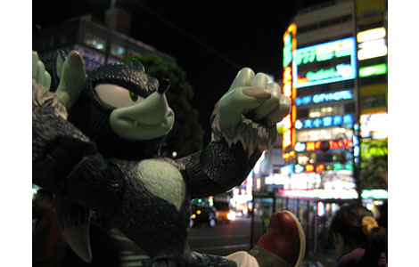
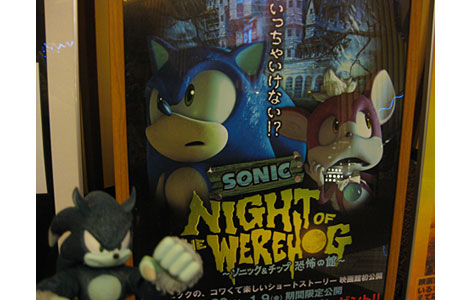
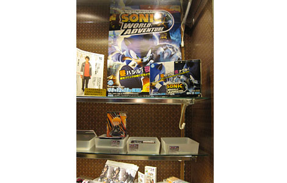
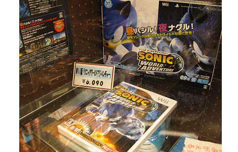
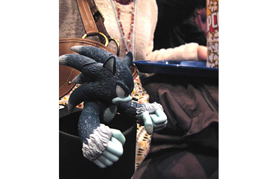

『NIGHT OF THE WEREHOGを見てきました★』
2008年12月24日
12月某日―――
ヨシノとマツバラは
映画館で上映されている
『NIGHT OF THE WEREHOG ～ソニック＆チップ 恐怖の館～』を観るため
新宿にやって来ました！
イエーイ、到着しました大都会新宿！
東京だ、東京だ！
ヨシノ、ここは昔の人が「東京砂漠」と呼んだ
恐ろしいダンジョンなのよ！
……会社も東京にあるんだけど。
(マツバラ、はしゃいでるなあ……)

夜の都会に、ウェアホッグも大張り切り。
新宿バルト9に到着。
休日の夕方ということで、人がいっぱいです！
おおー、新宿バルト9、すっごいオシャレだね。
カップルもいっぱいだし。
ここは全スクリーンでソニックが同時上映されるから、
何を観てもいいんだよね！
ヨシノ、どれ観たい？
じゃあ、ロード・オブ・ザ・リ……
今やってる映画を選んでよ！
どいて！
私が選ぶから！！
(マツバラが選んだ映画の俳優を見て)
お。
それは、マトリック……
違うから！！
も～、少しは映画を勉強してよ！！
ちょっぴりモメましたが、無事チケットを買えました。
上映開始までしばらく時間があるので、フロア内を散策♪
あ、マツバラ、見て。
ソニックの看板があるよ。

立派な看板に、ウェアホッグも思わずガッツポーズ
すごいすごーい！
まさかこんな立派に宣伝してもらえてるなんて、感激！
チケット売り場の列に並んでいる人たちも、看板をちらちら見てくれてる！
これは目立つもんねえ。
あっ、グッズ売り場にもソニックがいる！
なんと。

大きなポスターがどーん！

Wii版もどーん！
うわあ、Wii版も売ってるんだ！？
すごいね、新宿バルト9！
シアター入口で
「NIGHT OF THE WEREHOG」のアンケートまでやってた。
すっごーい！！
本当、予想以上だね！！
いまどきの言葉で言うと、「まじパねえ」
ってやつですね。
んっ？ それ、どういう意味？
……マツバラ、少しは若さを勉強しようね。
というわけでバルト9さん、本当にありがとうございます♪
ねえねえ、今のどういう意味～？
そうこうするうちに上映時間が。
急いで席に着きます。
席が暗くなると同時に、ソニックの映画が始まりました！

ウェアホッグは座席の間のジューススタンドにて一緒に映画を堪能♪
（そして映画終了後……）
いやあ、すばらしかったねえ。
やっぱり映画館って迫力が違うよ。
………
大スクリーンで動くソニックとチップに
なんだか感動しちゃいました。
皆さんも是非♪
………
……マツバラ、どうしたの？
感動のあまり涙が止まらないの？
ソニックきゅん、まじパねえ……
そうそう。
そうやって使うのだ。
ソニックのショートムービー、絶賛公開中！
詳しくはこちらのサイトと、19日の記事をご覧下さい。
日時: 2008年12月24日 19:00 | パーマリンク


 ソニックを愛する、元気な『SWA』2年目プランナー。
ソニックを愛する、元気な『SWA』2年目プランナー。 マイペースな『SWA』2年目プランナー。
マイペースな『SWA』2年目プランナー。
 ご意見・ご要望はこちら
ご意見・ご要望はこちら RSS
RSS